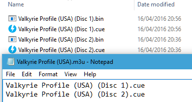
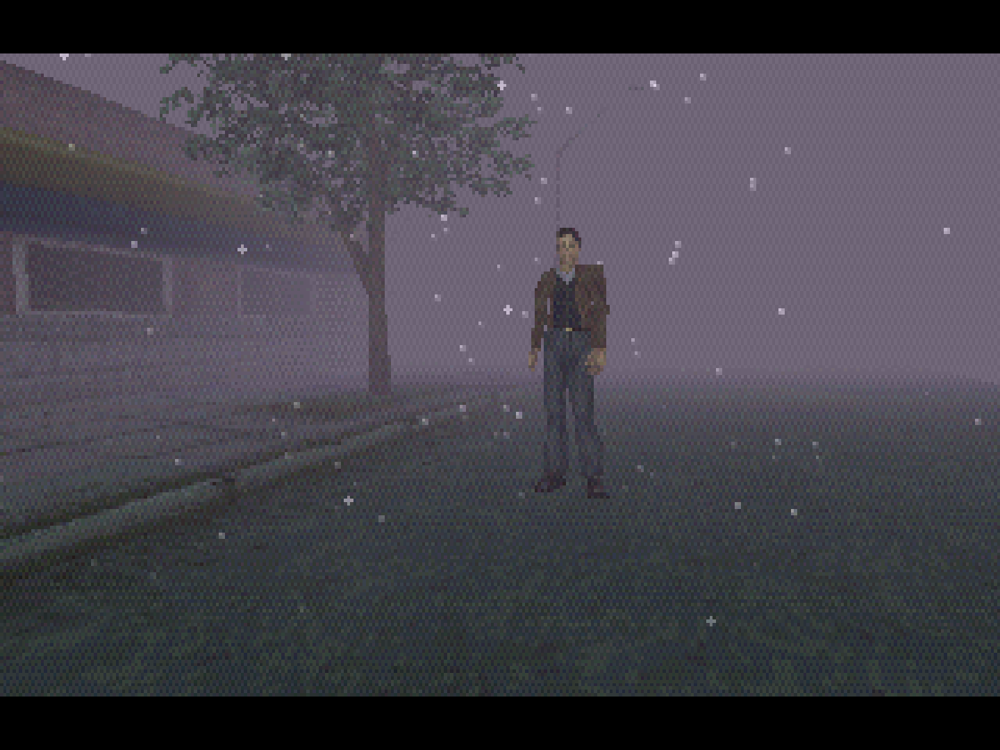
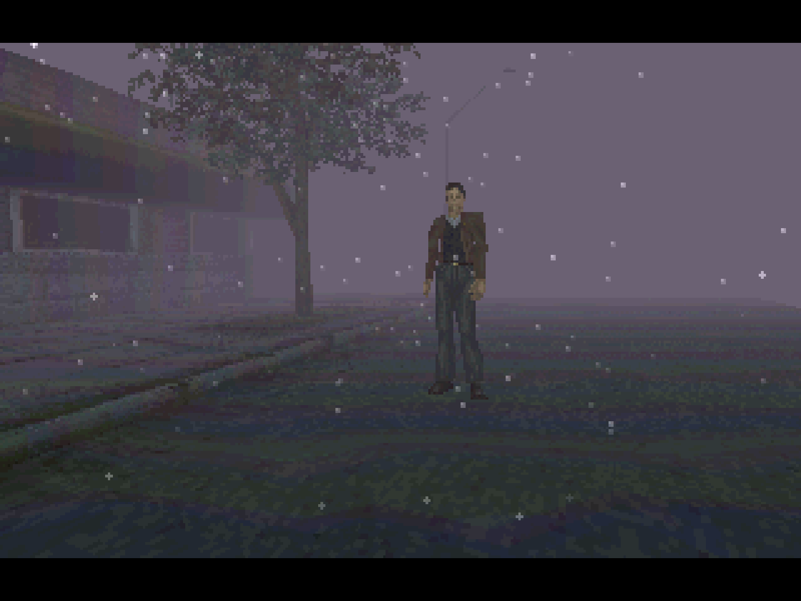

Sony - PlayStation (PCSX ReARMed)¶
Background¶
PCSX ReARMed is a fork of PCSX Reloaded. It differs from the latter in that it has special optimizations for systems that have an ARM architecture-based CPU.
The PCSX ReARMed core has been authored by
- PCSX Team
- notaz
- Exophase
The PCSX ReARMed core is licensed under
A summary of the licenses behind RetroArch and its cores can be found here.
BIOS¶
Required or optional firmware files go in the frontend's system directory.
Attention
In case the PCSX ReARMed core can find no BIOS files named like this in RetroArch's system directory, it will default to a High-Level Emulation BIOS. This decreases the level of compatibility of the emulator, so it is recommended that you always supply valid BIOS images inside the system directory.
| Filename | Description | md5sum |
|---|---|---|
| scph101.bin | Version 4.4 03/24/00 A | 6E3735FF4C7DC899EE98981385F6F3D0 |
| scph7001.bin | Version 4.1 12/16/97 A | 1e68c231d0896b7eadcad1d7d8e76129 |
| scph5501.bin | Version 3.0 11/18/96 A | 490f666e1afb15b7362b406ed1cea246 |
| scph1001.bin | Version 2.0 05/07/95 A | dc2b9bf8da62ec93e868cfd29f0d067d |
In the event that none of the above is found, PCSX_ReARMed will search for filenames starting with "scph" and use that instead.
It doesnt seem to matter whatever bios version is used and from what region as long as its from a retail psx/ps-one.
If no compatible bios is found, PCSX_ReARMed will revert to use HLE bios, which can have compatibility issues (e.g. memcard issues in Suikoden games and some games just going into black screens...)
Extensions¶
Content that can be loaded by the PCSX ReARMed core have the following file extensions:
- .bin
- .cue
- .img
- .mdf
- .pbp
- .toc
- .cbn
- .m3u
- .ccd
RetroArch database(s) that are associated with the PCSX ReARMed core:
Features¶
Frontend-level settings or features that the PCSX ReARMed core respects.
| Feature | Supported |
|---|---|
| Restart | ✔ |
| Saves | ✔ |
| States | ✔ |
| Rewind | ✔ |
| Netplay | ✕ |
| Core Options | ✔ |
| RetroAchievements | ✔ |
| RetroArch Cheats | ✔ |
| Native Cheats | ✕ |
| Controls | ✔ |
| Remapping | ✔ |
| Multi-Mouse | ✔ |
| Rumble | ✔ |
| Sensors | ✕ |
| Camera | ✕ |
| Location | ✕ |
| Subsystem | ✕ |
| Softpatching | ✕ |
| Disk Control | ✔ |
| Username | ✕ |
| Language | ✕ |
| Crop Overscan | ✕ |
| LEDs | ✕ |
Directories¶
The PCSX ReARMed core's library name is 'PCSX-ReARMed'
The PCSX ReARMed core saves/loads to/from these directories.
Frontend's Save directory
| File | Description |
|---|---|
| *.srm | Memory card slot 0 |
| pcsx-card2.mcd | Memory card slot 1 (if enabled, default to disabled) |
Frontend's State directory
| File | Description |
|---|---|
| *.state# | State |
Geometry and timing¶
- The PCSX ReARMed core's core provided FPS is 60 for NTSC games. 50 for PAL games.
- The PCSX ReARMed core's core provided sample rate is 44100 Hz
- The PCSX ReARMed core's base width is 320
- The PCSX ReARMed core's base height is 240
- The PCSX ReARMed core's max width is 1024
- The PCSX ReARMed core's max height is 512
- The PCSX ReARMed core's core provided aspect ratio is 4/3
Loading content¶
PCSX ReARMed needs a cue-sheet that points to an image file. A cue sheet, or cue file, is a metadata file which describes how the tracks of a CD or DVD are laid out.
If you have e.g. foo.bin, you should create a text file and save it as foo.cue. Most PS1 games are single-track, so the cue file contents should look like this:
foobin.cue
FILE "foo.bin" BINARY
TRACK 01 MODE1/2352
INDEX 01 00:00:00
After that, you can load the foo.cue file in RetroArch with the PCSX ReARMed core.
Attention
Certain PS1 games are multi-track, so their .cue files might be more complicated.
Playing PAL copy protected games¶
PAL copy protected games need a SBI Subchannel file next to the bin/cue files in order to get past the copy protection.
- Ape Escape (Europe).bin
- Ape Escape (Europe).cue
- Ape Escape (Europe).sbi
Multiple-disk games¶
If foo is a multiple-disk game, you should have .cue files for each one, e.g. foo (Disc 1).cue, foo (Disc 2).cue, foo (Disc 3).cue.
To take advantage of PCSX ReARMed's Disk Control feature for disk swapping, an index file (a m3u file) should be made.
Create a text file and save it as foo.m3u. Then enter your game's .cue files on it. The m3u file contents should look something like this:
foo.m3u
foo (Disc 1).cue
foo (Disc 2).cue
foo (Disc 3).cue
After that, you can load the foo.m3u file in RetroArch with the PCSX ReARMed core.
Here's a m3u example done with Valkryie Profile
Valkyrie Profile (USA).m3u
Valkyrie Profile (USA) (Disc 1).cue
Valkyrie Profile (USA) (Disc 2).cue

Attention
Adding multi-track games to a RetroArch playlist is recommended. (Manually add an entry a playlist that points to foo.m3u)
Swapping disks¶
Swapping disks follows this procedure
-
Open tray (Disk Cycle Tray Status)
-
Change the Disk Index to the disk you want to swap to.
-
Close tray (Disk Cycle Tray Status)
-
Return to the game and wait a few seconds to let it take effect
PBP¶
Alternatively to using cue sheets with .bin/.iso files, you can convert your games to .pbp (Playstation Portable update file).
A recommended .pbp convert tool is PSX2PSP.
If converting a multiple-disk game, all disks should be added to the same .pbp file, rather than making a .m3u file for them.
Most conversion tools will want a single .bin file for each disk. If your game uses multiple .bin files (tracks) per disk, you will have to mount the cue sheet to a virtual drive and re-burn the images onto a single track before conversion.
Attention
RetroArch does not currently have .pbp database due to variability in users' conversion methods. All .pbp games will have to be added to playlists manually.
Saves¶
For game savedata storage, the PSX console used memory cards. The PSX console had two slots for memory cards.
The PCSX ReARMed core defaults to only support the first memory card slot.
Second memory card slot can be enabled via the pcsx_rearmed_memcard2 option.
In this doc, the first memory card slot will be referred to as 'Memcard slot 0'.
The second memory card slot will be referred to as 'Memcard slot 1'.
For memory card functionality and usage, the PCSX ReARMed core will the Libretro savedata format.
| Libretro savedata format |
|---|
| gamename.srm |
| pcsx-card2.mcd |
By default, the filename of the Memcard slot 0 savedata will match the loaded cue or m3u or pbp filename, like this:
By default, the filename of the Memcard slot 1 savedata (if enabled) will be
pcsx-card2.mcd. This basically means that all games in the same folder share
the same nemory card in slot 1.
-
Loaded content: Breath of Fire III (USA).cue
-
Memcard slot 0: Breath of Fire III (USA).srm
or
-
Loaded content: Final Fantasy VII (USA).m3u
-
Memcard slot 0: Final Fantasy VII (USA).srm
or
-
Loaded content: Wild Arms 2 (USA).pbp
-
Memcard slot 0: `Wild Arms 2 (USA).srm
Attention
To import your old memory cards from other emulators, you need to rename them to the Libretro savedata format.
Warning
Keep in mind that save states also include the state of the memory card; carelessly loading an old save state will OVEWRITE the memory card, potentially resulting in lost saved games. You can set the 'Don't overwrite SaveRAM on loading savestate' option in RetroArch's Saving settings to On to prevent this.
Core options¶
The PCSX ReARMed core has the following option(s) that can be tweaked from the core options menu. The default setting is bolded.
Settings with (Restart) means that core has to be closed for the new setting to be applied on next launch.
-
Frameskip [pcsx_rearmed_frameskip] (0|1|2|3)
Choose how much frames should be skipped to improve performance at the expense of visual smoothness.
-
Use BIOS [pcsx_rearmed_bios] (auto|HLE)
Allows you to use real bios file (if available) or emulated bios (HLE).
HLE - Forces core to use built-in bios emulation
auto - Tries to search for compatible bios file, falls back to use HLE if none is found.
-
Region [pcsx_rearmed_region] (auto|NTSC|PAL)
Choose what region the system is from.
-
Enable second memory card [pcsx_rearmed_memcard2] (disabled|enabled)
Enables or disabled second memory card (Memcard 2 slot). When enabled,
Memcard 2 slot's save data will be loaded and saved as
pcsx-card2.mcdfile in the saves directory.
All games will share the same second memory card. -
Emulated Mouse Sensitivity [pcsx_rearmed_input_sensitivity] (1.00|0.05 - 2.00)
Adjust movement responsiveness for the emulated mouse device.
-
Multitap 1 [pcsx_rearmed_multitap1] (auto|disabled|enabled)
Enables/Disables multitap functionality on port 1, allowing 3-8 player support in games that permit it.
auto - Enables multitap 1 when Pad 3-8 is not set to none.
enabled/disabled - Forces multitap 1 to be enabled or disabled regardless if pads 3-8 is used.
-
Multitap 2 [pcsx_rearmed_multitap2] (auto|disabled|enabled)
Enables/Disables multitap functionality on port 2, allowing 3-8 player support in games that permit it.
auto - Enables multitap 2 when Pad 5-8 is not set to none.
enabled/disabled - Forces multitap 2 to be enabled or disabled regardless if pads 5-8 is used.
-
NegCon Twist Deadzone (percent) [pcsx_rearmed_negcon_deadzone] (0|5|10|15|20|25|30)
Sets the deadzone of the RetroPad left analog stick when simulating the 'twist' action of emulated neGcon Controllers. Used to eliminate drift/unwanted input.
Attention
Most (all?) negCon compatible titles provide in-game options for setting a 'twist' deadzone value. To avoid loss of precision, the in-game deadzone should always be set to zero. Any analog stick drift should instead be accounted for by configuring the 'NegCon Twist Deadzone' core option. This is particularly important when 'NegCon Twist Response' is set to 'quadratic' or 'cubic'.
Xbox gamepads typically require a deadzone of 15-20%. Many Android-compatible bluetooth gamepads have an internal 'hardware' deadzone, allowing the deadzone value here to be set to 0%.
For convenience, it is recommended to make use of the 'Options → Analog Setting 1P' menu of Gran Turismo when calibrating the 'NegCon Twist Deadzone'. This provides a clear and precise representation of 'real' controller input values.
-
NegCon Twist Response [pcsx_rearmed_negcon_response] (linear|quadratic|cubic)
Specifies the analog response when using a RetroPad left analog stick to simulate the 'twist' action of emulated neGcon Controllers.
'linear': Analog stick displacement is mapped linearly to negCon rotation angle.
Recommended when using racing wheel peripherals.'quadratic': Analog stick displacement is mapped quadratically to negCon rotation angle. This allows for greater precision when making small movements with the analog stick.
Optimal setting for gamepads.'cubic': Analog stick displacement is mapped cubically to negCon rotation angle. This allows for even greater precision when making small movements with the analog stick, but 'exaggerates' larger movements.
Enables precise control but difficult to use.
Attention
A linear response is not recommended when using standard gamepad devices. The negCon 'twist' mechanism is substantially different from conventional analog sticks; linear mapping over-amplifies small displacements of the stick, impairing fine control. A linear response is only appropriate when using racing wheel peripherals.
In most cases, the 'quadratic' option should be selected. This provides effective compensation for the physical differences between real/emulated hardware, enabling smooth/precise analog input.
-
Analog axis bounds [pcsx_rearmed_analog_axis_modifier] (circle|square)
Range bounds for analog axis. Square bounds help controllers with highly circular ranges that are unable to fully saturate the x and y axis at 45degree deflections.
-
Guncon Adjust X [pcsx_rearmed_gunconadjustx] (0|-25 - 25)
-
Guncon Adjust Y [pcsx_rearmed_gunconadjustx] (0|-25 - 25)
When using Guncon mode, you can override aim in emulator if shots misaligned, this applies an increment on the x or y axis.
-
Guncon Adjust Ratio X [pcsx_rearmed_gunconadjustratiox] (1|0.75 - 1.25)
-
Guncon Adjust Ratio Y [pcsx_rearmed_gunconadjustratioy] (1|0.75 - 1.25)
When using Guncon mode, you can override aim in emulator if shots misaligned, this applies a ratio on the x or y axis.
-
Enable Vibration [pcsx_rearmed_vibration] (enabled|disabled)
Enables Rumble. Look at the Rumble section for more information.
-
Enable Dithering [pcsx_rearmed_dithering] (enabled|disabled)
If Off, disables the dithering pattern the PSX applies to combat color banding.
Enable Dithering - On

Enable Dithering - Off

-
Frame duping [pcsx_rearmed_duping_enable] (enabled|disabled)
A speedup, redraws/reuses the last frame if there was no new data.
-
Display Internal FPS [pcsx_rearmed_display_internal_fps] (disabled|enabled)
Shows an on-screen frames per second counter.
-
Threaded Rendering [pcsx_rearmed_gpu_thread_rendering] (disabled|sync|async)
When enabled, runs GPU commands in a thread.
'Sync' waits for drawing to finish before vsync.
'Async' will not wait unless there's another frame behind it.
-
Show Bios Bootlogo(Breaks some games) [pcsx_rearmed_show_bios_bootlogo] (disabled|enabled)
Show the BIOS bootlogo.
Skip BIOS - Off
-
Sound: Reverb [pcsx_rearmed_spu_reverb] (enabled|disabled)
Enable sound reverb.
-
Sound: Interpolation [pcsx_rearmed_spu_interpolation] (simple|gaussian|cubic|off)
Modify sound interpolation.
-
CD Access Method (Restart) [pcsx_rearmed_async_cd] (sync|sync|async|precache)
Select method used to read data from content disk images.
'Synchronous': Mimics original hardware.
'Asynchronous': Reduce stuttering on devices with slow storage.
'Precache': Loads disk image into memory for faster access (Note: CHD only).
-
Advanced System Options
-
XA Decoding [pcsx_rearmed_noxadecoding] (enabled|disabled)
Disables XA sound, which can sometimes improve performance.
-
CD Audio [pcsx_rearmed_nocdaudio] (enabled|disabled)
Disables XA sound, which can sometimes improve performance.
-
SPU IRQ Always Enabled [pcsx_rearmed_spuirq] (disabled|enabled)
Compatibility tweak, should be left to off in most cases. This can be momentarily turned on at any point to try and fix some bugs.
Few examples includes:
'Alien Resurrection': bug where doors can remain closed until the option is turned on.
'Legend of Mana': audio out-of-sync bug during FMV sequences can also be fixed by momentarily switching the option on, then off when sound is normal.
-
Additional game fixes options
-
Diablo Music Fix [pcsx_rearmed_idiablofix] (disabled|enabled)
Fix for music randomly cuts out when pressing start or interact with somebody.
-
Parasite Eve 2/Vandal Hearts ½ Fix [pcsx_rearmed_pe2_fix] (disabled|enabled)
Enable this to fit Parasite Eve 2 and Vandal Hearts ½
-
InuYasha Sengoku Battle Fix [pcsx_rearmed_inuyasha_fix] (disabled|enabled)
Enable this to fix InuYasha.
-
Additional core options for DynaRec (ari64) builds:
-
Dynamic recompiler [pcsx_rearmed_drc] (enabled|disabled)
Enables core to use dynamic recompiler or interpreter (slower) cpu instructions.
When enabled, dynarec can use either one below:
Dynarec can either be ari64 for arm 32-bit devices while lightrec i used for 64-bit capable devices or platforms.
-
PSX cpu clock [pcsx_rearmed_psxclock] (30 - 100, default 57)
Overclock or underclock the PSX, default is 57.
Lower value = less work for the emu, may be faster in some cases.
Causes compatibility issues, so modify only for games that needs it, leave at default for most games.
-
Additional core options for devices using NEON-compatible CPU:
-
Enable interlacing mode(s) [pcsx_rearmed_neon_interlace_enable] (disabled|enabled)
Enables fake scanlines effect.
-
Enhanced resolution (slow) [pcsx_rearmed_neon_enhancement_enable] (disabled|enabled)
Renders in double resolution at the cost of lower performance
Not available for high resolution games.
-
Enhanced resolution speed hack [pcsx_rearmed_neon_enhancement_no_main] (disabled|enabled)
Speed hack for above option.
Causes game glitches.
-
Additional core options for devices using PEOPS GPU plugin (some options may or may not have effect or need core restart)
-
(GPU) Odd/Even Bit Hack [pcsx_rearmed_gpu_peops_odd_even_bit] (disabled|enabled)
Needed for Chrono Chross.
-
(GPU) Expand Screen Width [pcsx_rearmed_gpu_peops_expand_screen_width] (disabled|enabled)
Capcom fighting games.
-
(GPU) Ignore Brightness Color [pcsx_rearmed_gpu_peops_ignore_brightness] (disabled|enabled)
Black screens in Lunar.
-
(GPU) Disable Coordinate Check [pcsx_rearmed_gpu_peops_disable_coord_check] (disabled|enabled)
Enables compatibility mode.
-
(GPU) Lazy Screen Update [pcsx_rearmed_gpu_peops_lazy_screen_update] (disabled|enabled)
Pandemonium 2
-
(GPU) Old Frame Skipping [pcsx_rearmed_gpu_peops_old_frame_skip] (enabled|disabled)
Skips every second frame.
-
(GPU) Repeated Flat Tex Triangles [pcsx_rearmed_gpu_peops_repeated_triangles] (disabled|enabled)
Needed by Dark Forces.
-
(GPU) Draw Quads with Triangles [pcsx_rearmed_gpu_peops_quads_with_triangles] (disabled|enabled)
Better G-colors, worse textures.
-
(GPU) Fake 'Gpu Busy' States [pcsx_rearmed_gpu_peops_fake_busy_state] (disabled|enabled)
Toggle busy flag after drawing.
-
Additional core options for devices using UNAI GPU plugin (some options may or may not have effect or need core restart)
-
(GPU) Enable Blending [pcsx_rearmed_gpu_unai_blending] (enabled|disabled)
-
(GPU) Enable Lighting [pcsx_rearmed_gpu_unai_lighting] (enabled|enabled)
-
(GPU) Enable Fast Lighting [pcsx_rearmed_gpu_unai_fast_lighting] (disabled|enabled)
-
(GPU) Enable Forced Interlace [pcsx_rearmed_gpu_unai_ilace_force] (disabled|enabled)
-
(GPU) Enable Pixel Skip [pcsx_rearmed_gpu_unai_pixel_skip] (disabled|enabled)
-
(GPU) Enable Hi-Res Downscaling [pcsx_rearmed_gpu_unai_scale_hires] (disabled|enabled)
When enabled, will scale hi-res modes to 320x240, skipping unrendered pixels.
Rumble¶
Rumble only works in the PCSX ReARMed core when
- The content being ran has rumble support.
- The frontend being used has rumble support.
- The joypad device being used has rumble support.
- The 'Enable Vibration' core option is set to On
- The corresponding user's Pad Type is set to analog
Multitap¶
Activating multitap support in compatible games can be configured by the 'Multitap 1' and 'Multitap 2' core options.
-
When multitap1 and multitap2 are off, only User 1 and 2 input works and are assigned as player 1 and player 2 respectively.
-
When either multitap1 and/or multitap2 are on user input will be assigned indicated below:
-
User 1: Player 1
- User 2: Player 3
- User 3: Player 4
- User 4: Player 5
- User 5: Player 2
- User 6: Player 6
- User 7: Player 7
- User 8: Player 8
Joypad¶

| RetroPad Inputs | User 1 - 8 input descriptors | standard | analog | negcon |
|---|---|---|---|---|
 |
Cross | Cross | Cross | Analog Button I |
 |
Square | Square | Square | Analog Button II |
 |
Select | Select | Select | |
 |
Start | Start | Start | Start |
 |
D-Pad Up | D-Pad Up | D-Pad Up | D-Pad Up |
 |
D-Pad Down | D-Pad Down | D-Pad Down | D-Pad Down |
 |
D-Pad Left | D-Pad Left | D-Pad Left | D-Pad Left |
 |
D-Pad Right | D-Pad Right | D-Pad Right | D-Pad Right |
 |
Circle | Circle | Circle | A |
 |
Triangle | Triangle | Triangle | B |
 |
L1 | L1 | L1 | Left Shoulder Button (analog) |
 |
R1 | R1 | R1 | Right Shoulder Button (digital) |
 |
L2 | L2 | L2 | Analog Button II |
 |
R2 | R2 | R2 | Analog Button I |
 |
L3 | L3 | ||
 |
R3 | R3 | ||
 X X |
Left Analog X | Left Analog X | Twist | |
| Y |
Left Analog Y | Left Analog Y | ||
 X X |
Right Analog X | Right Analog X | ||
| Y |
Right Analog Y | Right Analog Y | Up: Analog Button I / Down: Analog Button II |
Compatibility¶
| Game | Issue |
|---|---|
| Jumping Flash 2 | Graphics glitches. Geometry issues. |
| Tobal 2 | Graphics glitch. Garbled Dream Factory intro sequence. |
External Links¶
- Official PCSX ReARMed Website
- Official PCSX ReARMed Github Repository
- Libretro PCSX ReARMed Core info file
- Libretro PCSX ReARMed Github Repository
- Report Libretro PCSX ReARMed Core Issues Here